Slow Web Pages Suck
So your site is slow...

Testing
WebPagetest
80/20 in Waterfalls
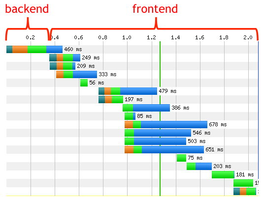Prod-like Environment
- CDN
- Minified assets
- Cache headers
- Fully localized environments
Key Metrics
Start Render
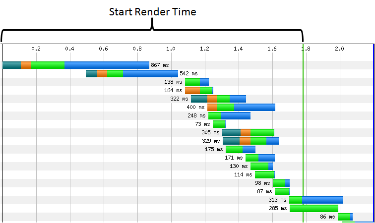when something non-[blank] is first displayed
Speed Index
Document Complete
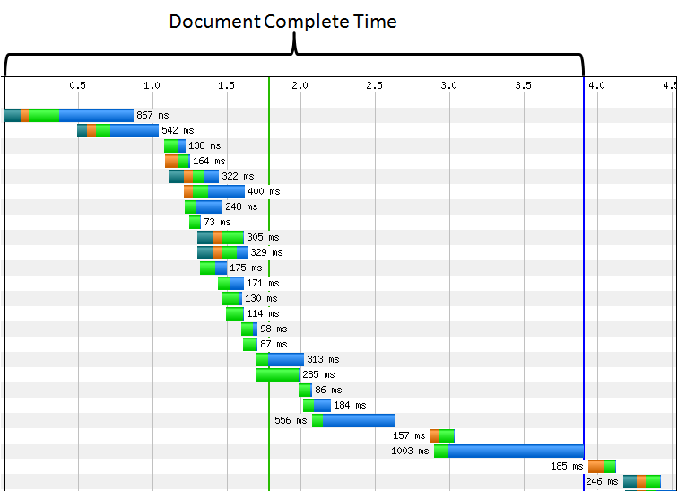Fully Loaded
total elapsed time to the point where all browser activity [stopped]
Calculations
Browser Weightings
| Browser | Percentage | Weighting |
|---|---|---|
| Chrome 26 | 24.4% | .464 |
| Firefox 20 | 14.4% | .274 |
| IE 9 | 13.8% | .262 |
Olympic Style Scoring
- Drop the top and bottom, average the rest
- Precision, not necessarily accuracy
Process
Ideate
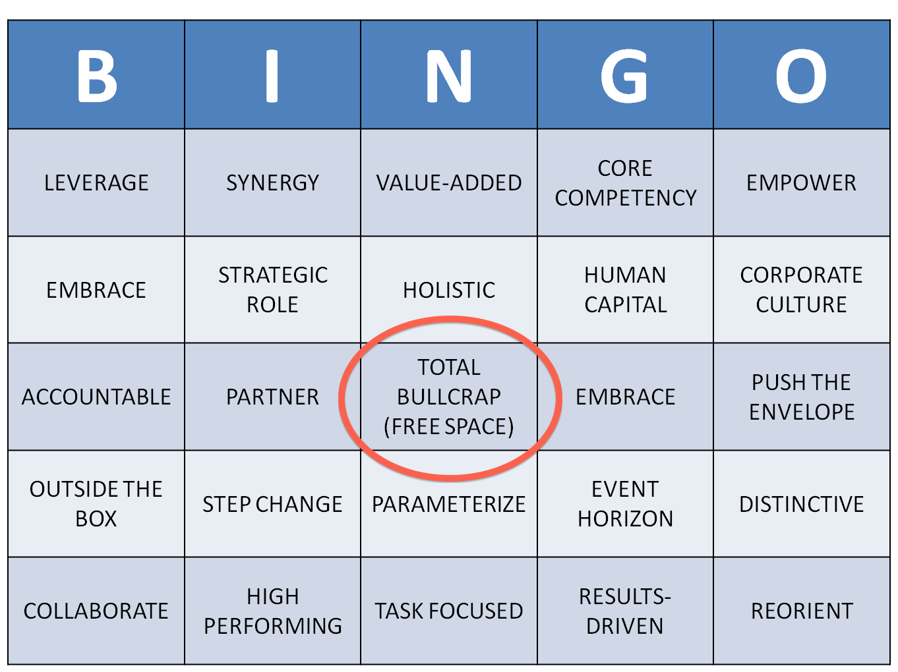Ideate
Performance Truth
Less bytes is faster
Waterfall Games
- Connections
- Lazy loading
- Blocking
Minimum Viable Product
Limit comments to 5 per offer
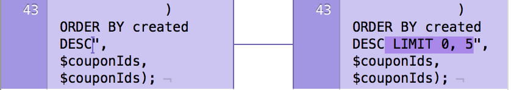Measure
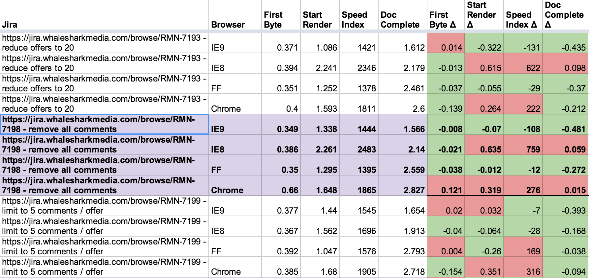Combine & Re-measure
Remove all extraneous images from store page
+
Reduce all CDNs to 1
Evaluate Viability
Limit comments to 5 per offer
- UX
- SEO
- Technical
Release
- A/B Test
- Measure, push, re-measure
- Craft your story
| Time | Browser | Old | New |
|---|---|---|---|
| 1200ms | Chrome | 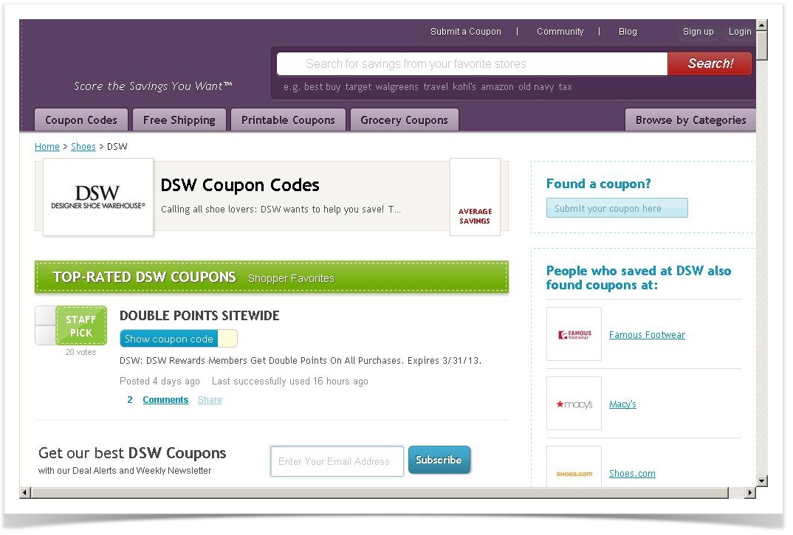 |
Repeat
- What's your end goal?
- Beware diminishing returns
Results
Past
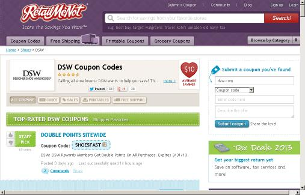| Start Render | Speed Index | Document Complete | Fully Loaded |
|---|---|---|---|
| 1702ms | 1817 | 2439ms | 6502ms |
First Cut
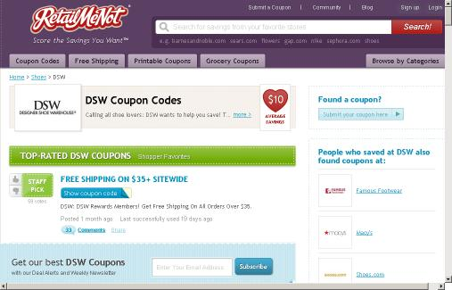| Start Render | Speed Index | Document Complete | Fully Loaded |
|---|---|---|---|
|
1297ms
-405ms |
1346
471 |
1680ms
759ms |
5000ms
1502ms |
Present
| Start Render | Speed Index | Document Complete | Fully Loaded |
|---|---|---|---|
|
1512ms
+215ms |
1557
+211 |
1938ms
+258ms |
3745ms
-1255ms |
Future
- 500ms Start Render
- 2000ms Fully Loaded?
- Per release (commit?) tracking
- SLAs for page speed
Now Yer All Fast Yer Dun, Right?!?
nope.
Performance Monitoring
- Business Metric, Not an Issue to Fix
- Synthetic Testing
- Real User Monitoring
- Service Level Agreements (SLA)
- Stuff We Found
Synthetic Tests
Browser Mob (Neustar)
- SaaS
- Load Testing Monitoring
- Basic HAR data
- Only Firefox
WebPagetest (WPT)
- SaaS (public, free, UI only)
- Open Source
- Powerful API (Private Hosted)
- Lots More Data
- Many Browsers (IE8,Safari, Chrome, iOS, Android)
Automating WPT
- Node CLI
- Hourly against our site (All Browsers)
- Daily against our competitors
- Google Keywords and Test the Top 10
- "Productionize" Server and Agents
BACON!!!

...actually Beacon.
Real User Monitoring (Beacon)
- Web site makes requests to beacon server to record events
- An Apache Server that hosts a one pixel, transparent gif
- Ship web logs go to Amazon S3
- Loaded Hadoop/Hive
- Pulled via Thrift into Vertica and DashboardDB
- Lag is approx. hour
What We Collect
- Stuff in the query (Performance Timings, A/B Test, etc.)
- Cookies, Useragent, Referrer, etc. (standard web log stuff)
- RequestId cookie glues it together
- 40-60 beacons a sec
When We Fire Beacons
- Top of Page → Simple HTML img tag, first element in body
- Page View → Fires after Document Complete
- Out Click → Fires before redemption flow
- Client Event → Fires on beaconed client events
Metrics
- Browser Performance Object
- Page Completion: "Top Of Page" beacon that has an associated "Page View" for a given "Request Id"
Dimensions
- Browser Type
- Test Buckets
- Pages, Sections of Sites
- Feature Roll Outs
Service Level Agreements (SLA)
Establish Rules
- No request for any resource takes longer than an second
- No request returns a status >= 400
- Only requests to white-listed domains prior to doc complete
- WPT Performance Metrics:
- Time to First Byte
- Time To Render
- Doc Complete
- Speed Index
Set Expectable Level
- Not all pages are equal
- Some page need to be exceptions
- Don't change to get into green
- Change to raise expectations
Dashboard It
- Green, Yellow, Orange, RED!!!!
- Include Trends (Graphs tell a story)
- Put it every where
Stuff We Found
Actual Performance Impact
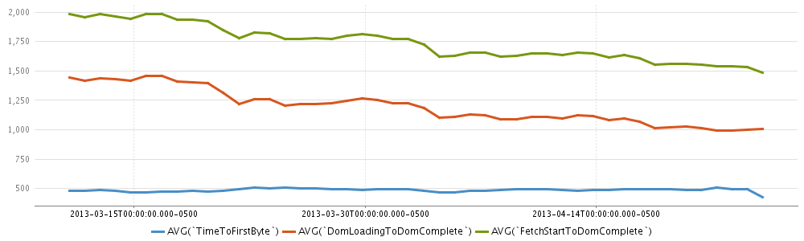Time of Day Performance
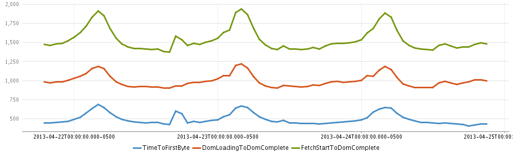Finding Issues
Finding The Source
Seeing the results
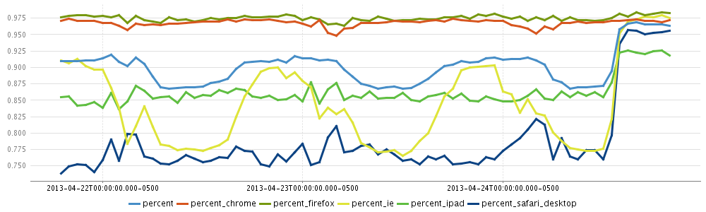Lessons Learned
- Data Lies / Investigate
- Look for correlations (GA, Site Catalyst, etc.)
- The more you record to more you can drill down
- Make the data available to everyone
- Performance is a debugging tool
- Performance is a business metric